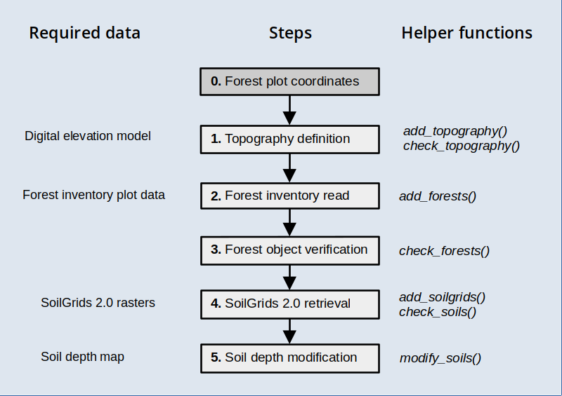

Preparing inputs I: forest inventory plots
Miquel De Cáceres / Adriana Tovar / Víctor Granda
2025-03-27
Source:vignettes/intro/PreparingInputs_I.Rmd
PreparingInputs_I.RmdAim
This vignette has been created to illustrate the creation of spatial inputs to be used in model simulations with the package, starting from forest inventory plot data.
Before reading this vignette, users should be familiar with forest and soil structures in package medfate. Moreover, a brief introduction to spatial structures used in medfateland package is given in vignette Package overview and examples are given in vignettes Spatially-uncoupled simulations.
Let’s first load necessary libraries:
The first section, A, shows how to create the spatial inputs from forest inventory data in tree lists, which will be the general case. The second section, B, shows the differences that occur when the starting point is a data structure issued from package forestables. For that part we need package forestables in our environment, because we will take an example data table from there. The package can be installed from GitHub:
# remotes::install_github("emf-creaf/forestables")
library(forestables)## Loading required package: data.table## Loading required package: dtplyrA. General procedure
The functions introduced in this procedure are meant to be executed sequentially to progressively add spatial information, as illustrated in the workflow below, but users are free to use them in the most convenient way.

Target locations
Package medfate includes a small dataset of tree data, corresponding to a dense holm oak forest in Poblet (Catalonia, Spain). As a result of the abandonment of previous coppicing exploitation, there is a high density of stems per individual. The data set includes data from a control plot and managed plot, where for the second two inventories have been carried out, one before management (thinning operation) and another afterwards. Hence, there are three stand structures.
We begin by defining an sf object with the target
locations and forest stand identifiers (column id):
# Define sf with three stands
cc <- rbind(c(1.0215, 41.3432),
c(1.0219, 41.3443),
c(1.0219, 41.3443))
d <- data.frame(lon = cc[,1], lat = cc[,2],
id = c("POBL_CTL", "POBL_THI_BEF", "POBL_THI_AFT"))
x <- sf::st_as_sf(d, coords = c("lon", "lat"), crs = 4326)
x## Simple feature collection with 3 features and 1 field
## Geometry type: POINT
## Dimension: XY
## Bounding box: xmin: 1.0215 ymin: 41.3432 xmax: 1.0219 ymax: 41.3443
## Geodetic CRS: WGS 84
## id geometry
## 1 POBL_CTL POINT (1.0215 41.3432)
## 2 POBL_THI_BEF POINT (1.0219 41.3443)
## 3 POBL_THI_AFT POINT (1.0219 41.3443)where POBL_CTL is the control forest plot,
POBL_THI_BEF is the managed plot before thinning and
POBL_THI_AFT is the managed plot after thinning.
Topography
Once an object sf has been defined with target
locations, we need to determine topographic features (elevation, slope,
aspect) and land cover corresponding to those locations. You should have
access to a Digital Elevation Model (DEM) at a desired resolution. Here
we will use a DEM raster for Catalonia at 30 m resolution, which we load
using package terra:
dataset_path <- "~/OneDrive/EMF_datasets/"
dem <- terra::rast(paste0(dataset_path,"Topography/Products/Catalunya/MET30m_ETRS89_UTM31_ICGC.tif"))
dem## class : SpatRaster
## dimensions : 9282, 9391, 1 (nrow, ncol, nlyr)
## resolution : 30, 30 (x, y)
## extent : 258097.5, 539827.5, 4485488, 4763948 (xmin, xmax, ymin, ymax)
## coord. ref. : ETRS89 / UTM zone 31N (EPSG:25831)
## source : MET30m_ETRS89_UTM31_ICGC.tif
## name : met15v20as0f0118Bmr1r050
## min value : -7.120
## max value : 3133.625Having these inputs, we can use function
add_topography() to add topographic features to our
starting sf:
y_1 <- add_topography(x, dem = dem, progress = FALSE)## |---------|---------|---------|---------|========================================= |---------|---------|---------|---------|=========================================
y_1## Simple feature collection with 3 features and 4 fields
## Geometry type: POINT
## Dimension: XY
## Bounding box: xmin: 1.0215 ymin: 41.3432 xmax: 1.0219 ymax: 41.3443
## Geodetic CRS: WGS 84
## # A tibble: 3 × 5
## id geometry elevation slope aspect
## <chr> <POINT [°]> <dbl> <dbl> <dbl>
## 1 POBL_CTL (1.0215 41.3432) 853. 30.1 76.0
## 2 POBL_THI_BEF (1.0219 41.3443) 814. 29.3 40.3
## 3 POBL_THI_AFT (1.0219 41.3443) 814. 29.3 40.3We can check that there are no missing values in topographic features:
check_topography(y_1)## ✔ No missing values in topography.Forest inventory data parsing
The next step is to define forest objects for our
simulations. Forests should be defined for all target locations whose
land cover is defined as wildland (here, all three stands).
In our case, we will define forest objects from tree
records in Poblet. While at this point you would read your own data from
a file or data base, here we simply load the data from
medfate:
## Plot.Code Indv.Ref Species Diameter.cm
## 1 POBL_CTL 1 Acer monspessulanum 7.6
## 2 POBL_CTL 2 Arbutus unedo 7.5
## 3 POBL_CTL 3 Arbutus unedo 7.5
## 4 POBL_CTL 4 Arbutus unedo 7.5
## 5 POBL_CTL 5 Arbutus unedo 7.5
## 6 POBL_CTL 6 Arbutus unedo 7.5There are only four columns in the data set. Plot.Code
identifies the forest stand, Indv.Ref is the tree number,
Species is the scientific name of the tree species and
Diameter.cm is the tree diameter in cm. To properly parse
forest inventory data, we need to define a mapping from these variables
into names meaningful for medfate. For this, we can
check function forest_mapTreeTable() in the package.
Furthermore, we need to map the forest stand identifier. If we exclude
Indv.Ref, the other variables would be mapped using:
mapping <- c("id" = "Plot.Code", "Species.name" = "Species", "DBH" = "Diameter.cm")Now we are ready to call function add_forests(), which
should facilitate the creation of forest objects:
y_2 <- add_forests(y_1, tree_table = poblet_trees, tree_mapping = mapping,
SpParams = SpParamsMED)## Warning in forest_mapTreeTable(x = tree_id, mapping_x = tree_mapping, SpParams
## = SpParams): Taxon names that were not matched: Quercus humilis.
## Warning in forest_mapTreeTable(x = tree_id, mapping_x = tree_mapping, SpParams
## = SpParams): Taxon names that were not matched: Quercus humilis.Note that two warnings were raised, informing us that Quercus
humilis (downy oak) was not matched to any species name in
SpParamsMED (that is the reason why we provided it as an
input). We correct the scientific name for downy oak and repeat to avoid
losing tree records:
poblet_trees$Species[poblet_trees$Species=="Quercus humilis"] <- "Quercus pubescens"
y_2 <- add_forests(y_1, tree_table = poblet_trees, tree_mapping = mapping,
SpParams = SpParamsMED)
y_2## Simple feature collection with 3 features and 5 fields
## Geometry type: POINT
## Dimension: XY
## Bounding box: xmin: 1.0215 ymin: 41.3432 xmax: 1.0219 ymax: 41.3443
## Geodetic CRS: WGS 84
## # A tibble: 3 × 6
## id geometry elevation slope aspect forest
## <chr> <POINT [°]> <dbl> <dbl> <dbl> <list>
## 1 POBL_CTL (1.0215 41.3432) 853. 30.1 76.0 <forest [5]>
## 2 POBL_THI_BEF (1.0219 41.3443) 814. 29.3 40.3 <forest [5]>
## 3 POBL_THI_AFT (1.0219 41.3443) 814. 29.3 40.3 <forest [5]>The function has added a column forest with the tree
data. We can check the metrics of the first forest stand using:
summary(y_2$forest[[1]], SpParamsMED)## Tree BA (m2/ha): 3.0179815 adult trees: 3.0179815 saplings: 0
## Density (ind/ha) adult trees: 267 saplings: 0 shrubs (estimated): 0
## Cover (%) adult trees: 42.3272186 saplings: 0 shrubs: 0 herbs: 0
## LAI (m2/m2) total: 0.5419688 adult trees: 0.5419688 saplings: 0 shrubs: 0 herbs: 0
## Fuel loading (kg/m2) total: 0.1414227 adult trees: 0.1414227 saplings: 0 shrubs: 0 herbs: 0
## PAR ground (%): NA SWR ground (%): NABoth density and tree basal area seem unusually low. This is because
we did not specify the sampled area, and tree data in
forest objects require a density estimation. By default,
each record (row in the input data frame) will count as a tree, but we
can add the sampled plot surface to correct density per hectare. In a
15-m radius plot, the sampled surface is 706.86 m2. We add this
information in the data table:
poblet_trees$PlotSurface <- 706.86and we can repeat the read of forest inventory data after adding a new element to the mapping vector:
mapping <- c(mapping, "plot.size" = "PlotSurface")
y_2 <- add_forests(y_1, tree_table = poblet_trees, tree_mapping = mapping, SpParams = SpParamsMED)If we check the forest again, we will see the change in density and basal area:
summary(y_2$forest[[1]], SpParamsMED)## Tree BA (m2/ha): 42.6956049 adult trees: 42.6956049 saplings: 0
## Density (ind/ha) adult trees: 3777.2684832 saplings: 0 shrubs (estimated): 0
## Cover (%) adult trees: 100 saplings: 0 shrubs: 0 herbs: 0
## LAI (m2/m2) total: 4.9189289 adult trees: 4.9189289 saplings: 0 shrubs: 0 herbs: 0
## Fuel loading (kg/m2) total: 1.2992685 adult trees: 1.2992685 saplings: 0 shrubs: 0 herbs: 0
## PAR ground (%): NA SWR ground (%): NAAt this point, we may wonder whether we are finished. Function
check_forests() can help detecting missing data:
check_forests(y_2)## ✔ No wildland locations with NULL values in column 'forest'.## ✔ All objects in column 'forest' have the right class.## ! Missing tree height values detected for 28 (100%) in 3 wildland locations (100%).The function alerts us that height values are missing. Since they are required for simulations using medfate, we need to estimate them. While being overly simplistic, here we use one allometric equation for all species to estimate tree height in cm from diameter:
poblet_trees$Height.cm <- 100 * 1.806*poblet_trees$Diameter.cm^0.518Now we modify the mapping to include height and repeat the reading operation:
mapping <- c(mapping, "Height" = "Height.cm")
y_2 <- add_forests(y_1, tree_table = poblet_trees, tree_mapping = mapping, SpParams = SpParamsMED)If we check the forest data again, we should encounter no more issues:
check_forests(y_2)## ✔ No wildland locations with NULL values in column 'forest'.## ✔ All objects in column 'forest' have the right class.## ✔ No missing/wrong values detected in key tree/shrub attributes of 'forest' objects.Soil parameterization
Soil information is most usually lacking for the target locations. Regional maps of soil properties may be available in some cases. Here we assume this information is not available, so that we resort to global products. In particular, we will use information provided in SoilGrids at 250 m resolution (Hengl et al. (2017); Poggio et al. (2021)).
SoilGrids 2.0 data
Function add_soilgrids() can perform queries using the
REST API of SoilGrids, but this becomes problematic for multiple sites.
Hence, we recommend downloading SoilGrid rasters for the target region
and storing them in a particular format, so that function
add_soilgrids() can read them (check the details of the
function documentation). The extraction of SoilGrids data for our target
locations is fast using this approach:
soilgrids_path = paste0(dataset_path,"Soils/Sources/Global/SoilGrids/Spain/")
y_3 <- add_soilgrids(y_2, soilgrids_path = soilgrids_path, progress = FALSE)And the result has an extra column soil:
y_3## Simple feature collection with 3 features and 6 fields
## Geometry type: POINT
## Dimension: XY
## Bounding box: xmin: 1.0215 ymin: 41.3432 xmax: 1.0219 ymax: 41.3443
## Geodetic CRS: WGS 84
## # A tibble: 3 × 7
## id geometry elevation slope aspect forest soil
## <chr> <POINT [°]> <dbl> <dbl> <dbl> <list> <list>
## 1 POBL_CTL (1.0215 41.3432) 853. 30.1 76.0 <forest [5]> <df [6 × 7]>
## 2 POBL_THI_BEF (1.0219 41.3443) 814. 29.3 40.3 <forest [5]> <df [6 × 7]>
## 3 POBL_THI_AFT (1.0219 41.3443) 814. 29.3 40.3 <forest [5]> <df [6 × 7]>The elements of the list are the usual data frames of soil properties in medfate:
y_3$soil[[1]]## widths clay sand om bd rfc nitrogen
## 1 50 25.3 32.1 7.24 1.05 16.8 5.07
## 2 100 25.5 32.0 3.10 1.16 18.7 2.18
## 3 150 29.9 31.2 1.96 1.25 19.8 1.35
## 4 300 30.7 30.7 1.00 1.39 19.6 0.81
## 5 400 30.4 30.2 0.89 1.49 20.4 0.58
## 6 1000 32.0 30.2 0.62 1.50 21.5 0.44We can use function check_soils() to detect whether
there are missing values:
check_soils(y_3)## ✔ No wildland/agriculture locations with NULL values in column 'soil'.## ✔ No missing values detected in key soil attributes.Soil depth and rock content modification
SoilGrids 2.0 does not provide information on soil depth, and rock
fragment content is normally underestimated, which leads to an
overestimation of water holding capacity. Function
modify_soils() allows modifying soil definitions, if
information is available for soil depth, depth to the (unaltered)
bedrock, or both. Soil depth maps are not common in many regions, so
here we will resort on a global product at 250m-resolution by Shangguan et al. (2017),
which consists on three rasters:
# Censored soil depth (cm)
bdricm <- terra::rast(paste0(dataset_path, "Soils/Sources/Global/SoilDepth_Shangguan2017/BDRICM_M_250m_ll.tif"))
# Probability of bedrock within first 2m [0-100]
bdrlog <- terra::rast(paste0(dataset_path, "Soils/Sources/Global/SoilDepth_Shangguan2017/BDRLOG_M_250m_ll.tif"))
# Absolute depth to bedrock (cm)
bdticm <- terra::rast(paste0(dataset_path, "Soils/Sources/Global/SoilDepth_Shangguan2017/BDTICM_M_250m_ll.tif"))In order to accelerate raster manipulations, we crop the global rasters to the extent of the target area:
x_vect <- terra::vect(sf::st_transform(sf::st_geometry(x), terra::crs(bdricm)))
x_ext <- terra::ext(x_vect)
bdricm <- terra::crop(bdricm, x_ext, snap = "out")
bdrlog <- terra::crop(bdrlog, x_ext, snap = "out")
bdticm <- terra::crop(bdticm, x_ext, snap = "out")Censored soil depth is a poor product of actual soil depth, but we have observed a fairly good correlation between soil depth values in Catalonia and the probability of finding the bedrock within the first two meters. Hence, we multiply the two layers and use it as a (crude) estimate of soil depth, expressing it in mm:
soil_depth_mm <- (bdricm$BDRICM_M_250m_ll*10)*(1 - (bdrlog$BDRLOG_M_250m_ll/100))and we take the depth to bedrock as appropriate, but change its units to mm as well:
depth_to_bedrock_mm <- bdticm*10We can now call function modify_soils() with the two
rasters to perform the correction of soil characteristics:
y_4 <- modify_soils(y_3,
soil_depth_map = soil_depth_mm,
depth_to_bedrock_map = depth_to_bedrock_mm,
progress = FALSE)In this case, the depth to bedrock values were deeper than 2m, so that only the soil depth map had an effect on the correction procedure. After the correction, the rock fragment content of the soil has changed substantially:
y_4$soil[[1]]## widths clay sand om bd rfc nitrogen
## 1 50 25.3 32.1 7.24 1.05 16.80000 5.07
## 2 100 25.5 32.0 3.10 1.16 18.70000 2.18
## 3 150 29.9 31.2 1.96 1.25 19.80000 1.35
## 4 300 30.7 30.7 1.00 1.39 27.76899 0.81
## 5 400 30.4 30.2 0.89 1.49 49.36709 0.58
## 6 1000 32.0 30.2 0.62 1.50 92.56329 0.44Finally, we can call again check_soils() to verify that
everything is fine:
check_soils(y_4)## ✔ No wildland/agriculture locations with NULL values in column 'soil'.## ✔ No missing values detected in key soil attributes.Initialization test
We can check whether the input data set is well formed by calling
function initialize_landscape():
z <- initialize_landscape(y_4, SpParamsMED, defaultControl(),
progress = FALSE)
z## Simple feature collection with 3 features and 7 fields
## Geometry type: POINT
## Dimension: XY
## Bounding box: xmin: 1.0215 ymin: 41.3432 xmax: 1.0219 ymax: 41.3443
## Geodetic CRS: WGS 84
## # A tibble: 3 × 8
## id geometry elevation slope aspect forest soil
## * <chr> <POINT [°]> <dbl> <dbl> <dbl> <list> <list>
## 1 POBL_CTL (1.0215 41.3432) 853. 30.1 76.0 <forest [5]> <df [6 × 7]>
## 2 POBL_THI_BEF (1.0219 41.3443) 814. 29.3 40.3 <forest [5]> <df [6 × 7]>
## 3 POBL_THI_AFT (1.0219 41.3443) 814. 29.3 40.3 <forest [5]> <df [6 × 7]>
## # ℹ 1 more variable: state <list>Everything seems fine for simulations!
B. Procedure from forestables
R package forestables allows reading and harmonizing national forest inventory data from the FIA (USA forest inventory), FFI (France forest inventory) and IFN (Spain forest inventory). When an data issued from this package is the starting point to create spatial inputs for medfateland, the general procedure is simplified, as shown below:
Example dataset
To illustrate this procedure, we first load an example data set given in the forestables package for the Spanish national forest inventory:
data("ifn_output_example")
ifn_output_example## # A tibble: 8,997 × 24
## id_unique_code year plot coordx coordy coord_sys crs elev aspect slope
## <chr> <int> <chr> <dbl> <dbl> <chr> <dbl> <dbl> <dbl> <dbl>
## 1 08_0001_NN_A1_A1 1990 0001 402000 4.68e6 ED50 23031 1900 NA NA
## 2 08_0002_NN_A1_A1 1990 0002 400000 4.68e6 ED50 23031 1700 NA NA
## 3 08_0003_NN_A1_A1 1990 0003 401000 4.68e6 ED50 23031 1700 NA NA
## 4 08_0004_NN_A1_A1 1990 0004 402000 4.68e6 ED50 23031 1400 NA NA
## 5 08_0005_NN_A1_A1 1990 0005 400000 4.68e6 ED50 23031 1300 NA NA
## 6 08_0006_NN_A1_A1 1990 0006 397000 4.68e6 ED50 23031 1700 NA NA
## 7 08_0007_NN_A1_xx 1990 0007 399000 4.68e6 ED50 23031 1400 NA NA
## 8 08_0008_NN_A1_xx 1990 0008 401000 4.68e6 ED50 23031 1100 NA NA
## 9 08_0009_NN_A1_xx 1990 0009 402000 4.68e6 ED50 23031 1100 52 NA
## 10 08_0010_NN_A1_xx 1990 0010 394000 4.68e6 ED50 23031 1500 NA NA
## # ℹ 8,987 more rows
## # ℹ 14 more variables: country <chr>, version <chr>, class <chr>,
## # subclass <chr>, province_code <chr>, province_name_original <chr>,
## # ca_name_original <chr>, sheet_ntm <chr>, huso <dbl>, slope_mean <chr>,
## # type <int>, tree <list>, understory <list>, regen <list>The dataset contains data from different forest inventory surveys:
table(ifn_output_example$version)##
## ifn2 ifn3 ifn4
## 3542 3769 1686Here we will use only data from the last survey (IFN4):
ifn4_example <- ifn_output_example |>
dplyr::filter(version == "ifn4")
ifn4_example## # A tibble: 1,686 × 24
## id_unique_code year plot coordx coordy coord_sys crs elev aspect slope
## <chr> <int> <chr> <dbl> <dbl> <chr> <dbl> <dbl> <dbl> <dbl>
## 1 08_0001_NN_A1_A1 2015 0001 401922 4.68e6 ED50 23031 NA 202. 40
## 2 08_0002_NN_A1_A1 2014 0002 399895 4.68e6 ED50 23031 NA 342 40
## 3 08_0003_NN_A1_A1 2015 0003 400898 4.68e6 ED50 23031 NA 99 40
## 4 08_0004_NN_A1_A1 2014 0004 401903 4.68e6 ED50 23031 NA 292. 40
## 5 08_0005_NN_A1_A1 2014 0005 399917 4.68e6 ED50 23031 NA 99 40
## 6 08_0006_NN_A1_A1 2014 0006 396931 4.68e6 ED50 23031 NA 351 40
## 7 08_0009_xx_xx_A4 2016 0009 401899 4.68e6 ED50 23031 NA 90 40
## 8 08_0014_NN_A1_A1 2015 0014 397927 4.68e6 ED50 23031 NA 234 40
## 9 08_0016_xx_xx_A4 2014 0016 392906 4.68e6 ED50 23031 NA 346. 40
## 10 08_0020_NN_A1_A1 2015 0020 397842 4.68e6 ED50 23031 NA 36 40
## # ℹ 1,676 more rows
## # ℹ 14 more variables: country <chr>, version <chr>, class <chr>,
## # subclass <chr>, province_code <chr>, province_name_original <chr>,
## # ca_name_original <chr>, sheet_ntm <chr>, huso <dbl>, slope_mean <chr>,
## # type <int>, tree <list>, understory <list>, regen <list>Parsing forestable data
Function parse_forestable() allows parsing a data frame
(or sf) issued from package forestables and reshaping
it for medfateland. In this example we will only
transform the first 100 rows:
y_1 <- parse_forestable(ifn4_example[1:100,])
y_1## Simple feature collection with 100 features and 9 fields
## Geometry type: POINT
## Dimension: XY
## Bounding box: xmin: 1.689588 ymin: 42.14464 xmax: 2.041199 ymax: 42.29967
## Geodetic CRS: WGS 84
## # A tibble: 100 × 10
## id geometry year plot country version elevation slope
## <chr> <POINT [°]> <int> <chr> <chr> <chr> <dbl> <dbl>
## 1 08_000… (1.809049 42.29746) 2015 0001 ES ifn4 NA 40
## 2 08_000… (1.784615 42.28933) 2014 0002 ES ifn4 NA 40
## 3 08_000… (1.796778 42.28951) 2015 0003 ES ifn4 NA 40
## 4 08_000… (1.808973 42.28922) 2014 0004 ES ifn4 NA 40
## 5 08_000… (1.78507 42.27957) 2014 0005 ES ifn4 NA 40
## 6 08_000… (1.749026 42.27098) 2014 0006 ES ifn4 NA 40
## 7 08_000… (1.809255 42.2717) 2016 0009 ES ifn4 NA 40
## 8 08_001… (1.761288 42.26155) 2015 0014 ES ifn4 NA 40
## 9 08_001… (1.700605 42.25216) 2014 0016 ES ifn4 NA 40
## 10 08_002… (1.760416 42.25344) 2015 0020 ES ifn4 NA 40
## # ℹ 90 more rows
## # ℹ 2 more variables: aspect <dbl>, forest <list>As can be seen from the output, the function parsed plot ids, plot
coordinates, and topography. Importantly, it defined a new column called
forest and parsed tree and shrub data into it.
If we check the forest data, we may encounter issues to be solved:
check_forests(y_1)## ✔ No wildland locations with NULL values in column 'forest'.## ✔ All objects in column 'forest' have the right class.## ✔ No missing/wrong values detected in key tree/shrub attributes of 'forest' objects.Remaining steps
The remaining steps are similar to the general procedure, but are repeated here for completeness.
Topography data
Topographic information in national forest inventory data can contain a lot of missing values. It is normally preferrable to extract topographic features from a digital elevation model (although the error in plot coordinates adds uncertainty into the result):
y_2 <- add_topography(y_1, dem = dem, progress = FALSE)## |---------|---------|---------|---------|========================================= |---------|---------|---------|---------|========================================= Soil data
Soil data is not normally sampled in national forest inventory data, or it is difficult to harmonize. Therefore, we will normally resort on SoilGrids as before:
y_3 <- add_soilgrids(y_2, soilgrids_path = soilgrids_path, progress = FALSE)We can now call function modify_soils() with the two
rasters to perform the correction of soil characteristics:
y_4 <- modify_soils(y_3,
soil_depth_map = soil_depth_mm,
depth_to_bedrock_map = depth_to_bedrock_mm,
progress = FALSE)Finally, we can call check_soils() to verify that
everything is fine:
check_soils(y_4)## ✔ No wildland/agriculture locations with NULL values in column 'soil'.## ✔ No missing values detected in key soil attributes.Initialization test
At this point we should test the initialization. Here, however, we
should use an SpParams data frame having all the species
mentioned in the forest inventory data.